Children’s literature, literacy and childhood
Bookmark this website
Open the homepage and press Ctrl+D on Windows or Command+D on Mac. On a phone or tablet, use Add Bookmark in the browser’s Share or menu button.
Authors and Illustrators
Explore how picturebook creators use words, images and book design across their work.
122 book entries
For more recommendations, explore BookTrust’s Bookfinder.
Author studies
An author study: Anthony Browne
Look for visual clues that recur from book to book, then compare whose point of view shapes each story.

Voices in the Park
1998 · Doubleday
Four narrators describe an overlapping visit to a park. Shifts in type, colour and landscape make differences in mood and social position visible; compare what each voice notices and overlooks.

The Tunnel
1989 · Julia MacRae Books
A brother and sister enter an unsettling imaginative landscape through a tunnel. Visual references to fairy tales complicate the journey and the changing relationship between the siblings.
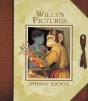
Willy’s Pictures
2000 · Walker Books
Willy appears inside playful reinterpretations of well-known artworks. Compare the visual substitutions and framing with reproductions of the referenced paintings, leaving room for children’s own transformations.

Willy and the Cloud
2016 · Walker Books
A cloud follows Willy and changes the way he experiences his day. The visual metaphor leaves room to discuss persistent worry without requiring readers to identify a single cause.

Gorilla
1983 · Julia MacRae Books
Hannah longs for time with her father and imagines an extraordinary companion. Browne’s visual echoes and quiet domestic details reward looking beyond the fantasy to the relationship that frames it.

Willy the Wimp
1984 · Julia MacRae Books
Willy tries to change himself after being mocked for his gentleness. The exaggeration of his transformation makes room to question whether strength requires copying the behaviour of bullies.

Piggybook
1986 · Julia MacRae Books
A household takes a mother’s labour for granted until her absence makes that dependence impossible to ignore. Transformations in the pictures sharpen the satire; ask how the family’s work is shared by the end.

Zoo
1992 · Julia MacRae Books
A family’s zoo visit raises uncomfortable questions about boredom, spectatorship and captivity. Compare the humans’ behaviour with the animals’ enclosures and the visual barriers repeated across the book.

Into the Forest
2005 · Walker Books Ltd
A child takes a route through the forest to visit his grandmother and encounters familiar fairy-tale figures. Notice the shift between colour and monochrome and the clues that connect the journey with anxiety at home.

Silly Billy
2007 · Walker Childrens, Walker Books Ltd
Billy’s worries multiply until his grandmother introduces worry dolls. The story offers a tangible conversation starter about worries; it need not imply that a single object will resolve every child’s distress.

Little Beauty
2008 · Walker Books
A gorilla’s request for companionship leads to a friendship with a kitten. Changes in scale and colour make tenderness and anger visible, while the pair’s communication invites questions about whose voice is heard.

The Shape Game
2003 · Doubleday
A family visit to an art gallery leads into playful transformations of shapes. Look for the links between artworks, family conversation and the drawings readers might make afterwards.

Through the Magic Mirror
2010 · Walker Books
Toby steps through a mirror into an altered version of his surroundings. Visual incongruities and reversals reward careful looking and let readers reconstruct the rules of the imagined world.
An author study: Michael Rosen
Read the books aloud to hear how repetition, pauses and changes of voice shape the story. Compare what each illustrator adds to Rosen’s words.


Michael Rosen’s Sad Book
2004 · Walker Books
Words and pictures make space for grief that can persist and change over time.

We’re Going on a Bear Hunt
1989 · Walker Books
A family crosses grass, water and mud before its bear hunt becomes unexpectedly real. The repeated chant and changing sounds invite a spoken, signed or movement-based performance, with a quieter way to join in for readers who prefer it.

This Is Our House
Michael Rosen · Bob Graham
1996 · Walker Books
George claims a cardboard house and invents reasons to keep other children out. Changing who controls the entrance exposes the arbitrariness of his rules and gives readers a concrete way to discuss exclusion.

Little Rabbit Foo Foo
Michael Rosen · Arthur Robins
1990 · Walker Books
A mischievous rabbit repeatedly ignores a warning from a fairy. Rhythm, escalation and the final transformation make this a performance story; compare the different characters’ reactions to the punishment.

Chocolate Cake
Michael Rosen · Kevin Waldron
2017 · Puffin
A child’s night-time encounter with an irresistible cake becomes a lively spoken narrative. Sound effects, pauses and the temptation to keep taking another bite make it especially rewarding to hear aloud.

A Great Big Cuddle: Poems for the Very Young
Michael Rosen · Chris Riddell
2015 · Walker Books
Short poems explore sounds, bodies, everyday experiences and imaginary situations. Try a poem more than once, letting children choose the noises, gestures or pauses they want to contribute.

The Bear in the Cave
Michael Rosen · Adrian Reynolds
2007 · Bloomsbury
A bear leaves his quiet home to investigate a busy city. Repeated language and changing soundscapes invite comparison between excitement, noise and the comfort of returning somewhere familiar.
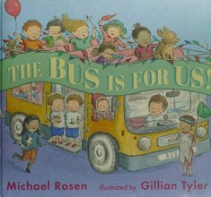
The Bus Is for Us!
Michael Rosen · Gill Tyler
2015 · Walker Books
Children imagine travelling in a succession of vehicles before celebrating a shared bus ride. Brief rhyming lines leave room for voices and actions, while the pictures extend the possibilities of each journey.

Tiny Little Fly
Michael Rosen · Kevin Waldron
2010 · Walker Books
A small fly disrupts much larger animals, who cannot quite catch it. The contrast in scale and recurring movements makes this an energetic read-aloud with plenty to notice in the characters’ expressions.

Red Ted and the Lost Things
Michael Rosen · Joel Stewart
2009 · Walker Books
A lost teddy meets other discarded belongings and tries to find a route home. The unfamiliar spaces and unlikely companions make a gentle adventure about being valued and finding help.

Dear Mother Goose
Michael Rosen · Nick Sharratt
2008 · Walker Books
Nursery-rhyme characters write to Mother Goose with problems that complicate their familiar stories. The letter format encourages readers to compare the advice with what they already know of each rhyme.

Bananas in My Ears
2011 · Walker Books
Rosen turns everyday mishaps, thoughts and conversations into short comic pieces. Read for the movement between ordinary speech and surprising sounds rather than expecting every poem to rhyme.
An author study: Grace Lin
Compare how Lin draws on family life, food and folklore, and how she moves between everyday settings and imagined worlds.

The Ugly Vegetables
1999 · Charlesbridge Publishing
A child envies neighbouring flower gardens before discovering what her mother’s vegetables contribute to a shared meal. The story connects family knowledge with neighbourhood exchange without making beauty the only measure of value.

Dim Sum for Everyone!
· New York: Alfred A. Knopf
A family shares small dishes at a dim sum restaurant, with details that invite children to talk about food and family routines.

Kite Flying
· New York: Alfred A. Knopf
A family makes and flies a dragon kite together.

Fortune Cookie Fortunes
2006 · Dragonfly Books
A family’s fortune cookies prompt speculation about what the messages might mean. Read the gap between prediction and events as playful interpretation rather than a fixed explanation of Chinese culture.

Bringing In the New Year
· New York: Alfred A. Knopf
A Chinese American family prepares for Lunar New Year through shared household traditions.

Thanking the Moon: Celebrating the Mid-Autumn Moon Festival
2010 · Alfred A. Knopf
A family prepares and shares a moon-viewing picnic. Attention to food, objects and small tasks makes celebration a sequence of shared contributions; invite comparisons without assuming every family observes the festival alike.
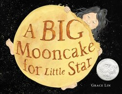
A Big Mooncake for Little Star
· New York: Little, Brown and Company
A playful story about the phases of the moon, inspired by the Mid-Autumn Festival.

A Big Bed for Little Snow
2019 · Little, Brown Books for Young Readers
Little Snow is tempted to bounce on a wonderfully full bed. The pictures connect his indoor mischief with snowfall, giving readers a visual secret beyond the straightforward account of a child testing a rule.
An author study: Jeannie Baker
Compare how collage and successive views of the same place show environmental change over time.

Where the Forest Meets the Sea
1987 · Julia MacRae Books
A child visits an Australian rainforest and imagines its deep past and possible future. Baker’s layered collage rewards close looking at the relationship between living forest, human history and development.

Window
2002 · Walker Books Ltd
A fixed view through a window changes as a child grows up. With little written guidance, readers can trace how expanding development transforms the landscape and decide what the repeated viewpoint reveals or leaves out.

Belonging
2008 · Walker Books
The view from a window gradually changes as residents reclaim and plant their urban surroundings. Small recurring details make collective work visible across time; compare this development with the changing landscape in Window.

Mirror
2010 · Walker Childrens Hardbacks
Two families, one in Australia and one in Morocco, go about their daily lives in parallel visual narratives. The book’s paired structure asks readers to look for connections without treating either household as a template for a whole country.

Circle
2020 · Walker Books
The migration of godwits links distant environments and the people who encounter them. Changes in scale connect individual birds with extensive journeys and habitats that depend on one another.

The Hidden Forest
2000 · Walker Books
A child’s underwater encounter reveals a kelp forest that had seemed unfamiliar from the surface. Textured collage invites close attention to the relationships among sea life, place and human activity.

Desert Jungle
2023 · Walker Books
A young visitor gradually becomes attentive to a desert landscape and the life within it. Baker’s collage makes small organisms and changing light worth looking for, challenging the assumption that a desert is empty.
An author study: Shaun Tan
Compare how unusual settings and changes of scale create a sense of strangeness, displacement or belonging.

The Arrival
2014 · Hodder Childrens Books
A newcomer navigates an unfamiliar city in a wordless sequence of drawings. Invented creatures and unreadable signs put readers alongside his uncertainty; follow recurring objects and gestures to build an interpretation.

The Red Tree
2001 · Lothian Books
Trace how recurring visual details give shape to feelings the narrator struggles to name.

The Lost Thing
2000 · Lothian Books
A boy notices a strange creature that everyone else seems to overlook. Industrial settings and official instructions create a question about whether fitting in is the same as finding a place to belong.

Cicada
2018 · Hodder Children’s Books
An insect office worker endures exclusion and exploitation in a human workplace. The restricted narration and abrupt visual shift at the end make this a challenging book about labour, power and escape.

Eric
2020 · Scholastic Press
A family hosts an exchange student whose interests seem unexpectedly small and particular. The quiet visual surprises invite readers to consider what hospitality looks like from a guest’s perspective.

Rules of Summer
2013 · Lothian Children’s Books
Two boys move through a summer governed by strange, often unspoken rules. The relationship between the brief captions and expansive images leaves readers to negotiate power, loyalty and what may have happened between scenes.

The Rabbits
John Marsden (author) · Shaun Tan (illustrator)
1998 · Lothian Books
Introduced rabbits transform a landscape inhabited by other creatures. Its allegory opens discussion of colonisation and environmental change; contextualise the book as a work by non-Indigenous creators rather than an Indigenous account of invasion.

Memorial
Gary Crew (author) · Shaun Tan (illustrator)
1999 · Lothian Books
A family’s memories gather around a tree threatened by road development. The layered images connect personal recollection, war remembrance and public decisions about what a community preserves.
An author study: David Wiesner
Compare how framing, page turns and repeated visual details guide the reader through wordless and near-wordless stories.

Tuesday
1991 · Clarion Books
Frogs travel through a sleeping town on floating lily pads. Nearly wordless sequences combine a precise sense of time with an impossible event; follow the evidence left for the bewildered humans.

Flotsam
2006 · Clarion Books
A child finds an underwater camera washed onto a beach and develops its extraordinary photographs. Repeated images invite close looking at scale, time and the chain of people connected through the camera.

Sector 7
1999 · Clarion Books
A visit to a tall building leads a child into the workshop where clouds are made. The visual narrative connects imaginative drawing with questions about routine, control and who gets to change the pattern.

Free Fall
1988 · Lothrop, Lee & Shepard Books
A sleeping child’s surroundings transform into a succession of dream landscapes. Repeated forms link one scene to the next and invite readers to find how ordinary objects become unfamiliar.

The Three Pigs
2012 · Andersen Press
Characters step outside their printed story and move between different narrative worlds.

Mr. Wuffles!
2013 · Clarion Books, Houghton Mifflin Harcourt
A cat’s apparently uninteresting toy contains tiny visitors with a problem to solve. Invented written languages and panel sequences ask readers to infer communication through pictures and cooperation.

Art & Max
2010 · Clarion Books
An attempt to paint a portrait changes the characters and the materials of their world. Colour, line and the physical properties of paint become part of the joke about what making art might mean.

Hurricane
1990 · Clarion Books
Two brothers wait out a storm and discover new possibilities in its aftermath. The movement between domestic safety and outdoor imagination makes the fallen tree more than a damaged object.
An author study: Suzy Lee
Compare how Lee uses the gutter and the edges of a spread to create boundaries that characters and readers can cross.

Wave
2008 · Chronicle Books
A girl’s encounter with the sea unfolds through gesture, colour and the space between the facing pages.
Mirror
2010 · Seven Footer Press
A child encounters a reflected figure whose actions begin to diverge from her own. The centre fold becomes part of the visual play, inviting readers to ask when reflection turns into an independent character.

Shadow
2010 · Chronicle Books
Household objects cast shadows that become a growing imaginative world. Compare objects with their silhouettes and look for the moments when the boundary between the two sides begins to fail.

Lines
2015 · Chronicle Books LLC
Marks on ice lead into an exploration of movement, mistakes and drawing itself. The almost empty page makes each change of direction visible and leaves room to ask where a picture begins.

The Zoo
2016 · Eerdmans Books for Young Readers
A visit to the zoo takes an unexpected turn as the pictures begin to diverge from the written account. Look back through the scenes to reconsider who is observing whom.

Open This Little Book
Jesse Klausmeier (author) · Suzy Lee (illustrator)
2013 · Chronicle Books
Compare the nested books with Lee’s use of page boundaries in her wordless work.
An author study: Beatrice Alemagna
Compare how texture, scale and changes of perspective bring a child’s curiosity and uncertainty into view.

The Wonderful Fluffy Little Squishy
2015 · Enchanted Lion Books
A child searches her neighbourhood for a special present for her mother. Alemagna’s crowded, textured pictures make each encounter part of the pleasure and give the invented gift a gradually emerging meaning.

On a Magical Do-Nothing Day
2018 · Thames & Hudson
A child reluctantly leaves a screen behind and explores a wet outdoor world. Colour and texture turn close attention into adventure; discuss the discovery without making all screen use the opposite of worthwhile experience.

Harold Snipperpot’s Best Disaster Ever
2020 · Thames & Hudson
Harold’s unhappy birthday changes when an unusual visitor brings more guests than anyone expected. The escalating visual chaos gives the story its humour while revealing shifts in the family’s relationships.

Never, Not Ever!
2021 · HarperCollins
A child’s determination to resist a change leads to an increasingly comic negotiation. Alemagna uses exaggeration and expression to make resistance understandable as well as funny.

You Can’t Kill Snow White
2022 · Enchanted Lion Books
Alemagna revisits Snow White through unsettling images and a close attention to violence and transformation. Preview this darker retelling and compare its visual choices with versions readers already know.

A Lion in Paris
2014 · Tate Publishing
An unfamiliar city gradually becomes a place where a lonely lion can be seen and accepted. Parisian landmarks sit alongside intimate moments of looking, making the outsider’s experience central to the journey.
An author study: David McKee
Compare how McKee uses colour to explore belonging in Elmer and conflict in Tusk Tusk. In Two Monsters and Not Now, Bernard, what can readers see that the characters miss?
David McKee’s publisher profile
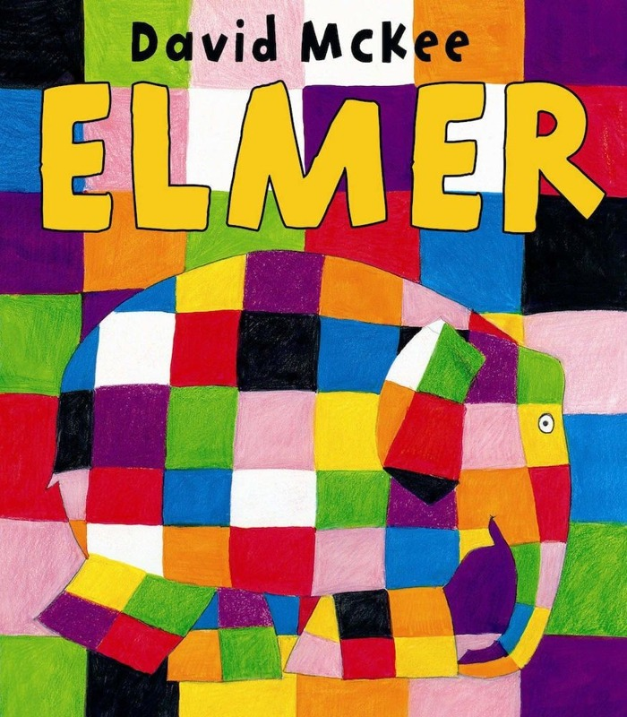
Elmer
2007 · Andersen Press editions · Andersen Press editions
A patchwork elephant tries to look like the rest of the herd and discovers what his absence changes. Look beyond the celebration of colour to the herd’s shared humour and Elmer’s wish to belong.
Publisher edition
Elmer and the Rainbow
2009 · Andersen Press editions · Andersen Press editions
Elmer wants to help a rainbow that has lost its colours. The visual problem opens a playful discussion of giving and whether sharing must leave the giver diminished.
Publisher edition
Elmer and the Lost Teddy
2008 · Andersen Press editions · Andersen Press editions
An elephant cannot sleep without his teddy, so Elmer helps search for it. The familiar attachment object makes a gentle route into talking about comfort, difference and practical care.
Publisher edition
Not Now, Bernard
2020 · Andersen Press · Andersen Press editions
Bernard tries to attract his parents’ attention while a monster waits outside. The repeated adult response creates dark comedy; compare what adults notice with what children can see happening in the pictures.
Publisher edition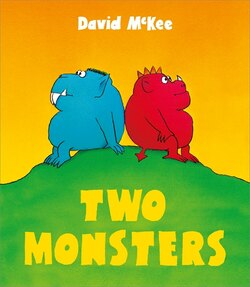
Two Monsters
2009 · Andersen Press editions · Andersen Press editions
Two creatures interpret the same event differently and turn disagreement into a destructive exchange. Their changing landscape exposes the cost of the argument before they recognise the limits of their viewpoints.
Publisher edition
Tusk Tusk
2018 · Andersen Press · Andersen Press editions
Black and white elephants become divided by hostility while others leave the conflict behind. The deliberately simple allegory raises questions about inherited prejudice and whether a new difference will become another excuse for division.
Publisher edition
The Conquerors
2005 · Andersen Press · Andersen Press editions
A general’s campaign encounters a country that changes his soldiers in unexpected ways. Everyday habits challenge the fantasy of total control, making the quiet shifts as significant as the marching armies.
Publisher edition
Two Can Toucan
2001 · Andersen Press · Andersen Press editions
An unnamed bird looks for work and a place in the world. Wordplay and the jobs it attempts create a comic route towards a name and an identity.
Publisher edition
An author study: John Burningham
Read Come Away from the Water, Shirley alongside Time to Get Out of the Bath, Shirley. How do the illustrations make room for an imaginary adventure alongside an ordinary conversation?

Borka: The Adventures of a Goose with No Feathers
First published 1963
A featherless goose struggles with expectations she cannot meet and finds help beyond her flock. Burningham’s textured pictures make the working harbour a setting for practical welcome rather than a demand to become the same as everyone else.

Mr Gumpy’s Outing
First published 1970
Mr Gumpy takes an increasingly crowded group for a boat ride. The repeating requests and fragile rules create anticipation before the inevitable upset, followed by a hospitable return to shore.
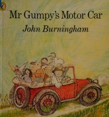
Mr Gumpy’s Motor Car
First published 1973
A drive becomes difficult when rain turns the road to mud. The passengers’ excuses and eventual cooperation turn a small mishap into a story about sharing the work as well as the ride.

Come Away from the Water, Shirley
First published 1977
Adults rest on a beach while Shirley’s imaginative adventure unfolds alongside their warnings. The contrast between the two visual narratives rewards reading the pictures independently of the adult commentary.

Time to Get Out of the Bath, Shirley
First published 1978
An ordinary bath opens onto a large imaginative adventure that the adult voice does not acknowledge. Compare the scale and activity of Shirley’s world with the repeated requests directed at her.
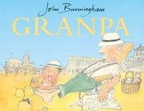
Granpa
First published 1984
A granddaughter and her grandfather share games, memories and fragments of conversation. Gaps between words and pictures invite readers to infer what connects the scenes, including the absence at the end.

John Patrick Norman McHennessy: The Boy Who Was Always Late
First published 1987
A boy’s extraordinary explanations for lateness are met with rigid disbelief. Repetition and the reversal at the end make this a pointed story about authority and whose account is taken seriously.
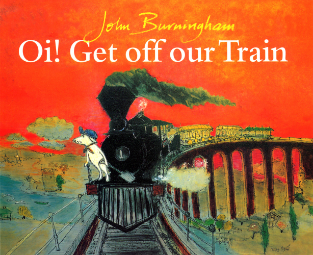
Oi! Get Off Our Train
First published 1989
A child’s train journey gathers animals whose homes are threatened. The repeated challenge changes into a pattern of welcome; discuss the different reasons each passenger needs somewhere to go.
An author study: Maurice Sendak
Compare how page layout and scale mark the journey into fantasy in Where the Wild Things Are, In the Night Kitchen and Outside Over There.

Kenny’s Window
First published 1956
A dream sets Kenny a series of questions that lead into imaginative encounters. The episodic form leaves room to explore loneliness, friendship and questions that resist literal answers.

The Sign on Rosie’s Door
First published 1960
Rosie turns an ordinary day into a performance for the children around her. Watch how props, gesture and audience response blur the boundary between play and theatrical storytelling.

Where the Wild Things Are
First published 1963
After an argument at home, Max travels into a world where his anger and imagination take expansive form. Changes in the size of the illustrations help tell the emotional journey before his return to a waiting supper.
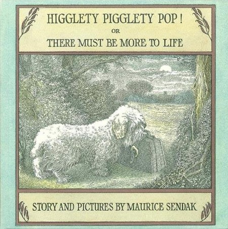
Higglety Pigglety Pop! or There Must Be More to Life
First published 1967
Jennie the dog leaves comfort behind in search of experience and eventually a part in a play. The odd encounters and theatrical conclusion invite a reading about desire that is more complicated than finding a better home.

In the Night Kitchen
First published 1970
Mickey’s dream carries him through a kitchen where baking becomes a surreal adventure. Panels, repeated sounds and changing scale invite readers to follow the movement between a child’s body and an enormous adult world.

Outside Over There
First published 1981
Ida must recover her baby sister after goblins take her away. The unsettling fantasy attends to anger, care and responsibility; preview its imagery and leave space for different responses to the sibling relationship.

We Are All in the Dumps with Jack and Guy
First published 1993
Nursery-rhyme fragments become a visual narrative about children facing poverty and danger. Dense, disturbing imagery demands contextual discussion rather than an assumption that a rhyming text is automatically light reading.
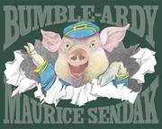
Bumble-Ardy
First published 2011
A pig plans the birthday party he has never had, and the celebration grows out of control. The exuberance sits beside fear of rejection and the desire to be forgiven, making the ending worth reading slowly.
Illustrator studies
An illustrator study: Yu Rong
Look at how paper-cut shapes, texture and line convey movement and sensation. Compare a school scene in Shu Lin’s Grandpa with a dance sequence in The Visible Sounds.
Yu Rong bibliography or profile

Shu Lin’s Grandpa
Matt Goodfellow (author) · Yu Rong (illustrator)
2021 · Otter-Barry Books
A newcomer’s place in her classroom begins to change when her grandfather shares his art. The fold-out visual sequence gives the class a different way to communicate and invites questions about who is expected to do the work of belonging.
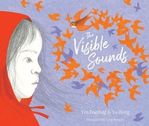
The Visible Sounds
Yin Jianling (author) · Yu Rong (illustrator)
2021 · UCLan Publishing
A girl experiences sound differently after losing her hearing. Yu Rong’s visual language offers ways to discuss perception and communication without assuming all deaf people share the same sensory experience.
- Cover pending
The Boy Who Loves to Lick the Wind
Fiona Carswell (author) · Yu Rong (illustrator)
2024 · Otter-Barry Books
A mother and child attend to the world through movement and sensory experience. The pictures invite readers to notice the child’s agency and interests rather than measuring communication only through spoken language.

Ming the Panda
Jake Hope (author) · Yu Rong (illustrator)
2024 · Otter-Barry Books
A panda’s story becomes a way to explore how an individual animal is seen and represented. Look closely at Yu Rong’s cut-paper forms and how the setting shapes the reader’s attention.

Tracks of a Panda
Nick Dowson (author) · Yu Rong (illustrator)
2006 · Walker Books
A panda’s movements connect scenes and encounters across the pages. Follow the visual trail and compare how words and pictures guide the reader through the landscape.
An illustrator study: Sydney Smith
Compare how cropping, light and colour make places feel different when seen from a child’s point of view.
Sydney Smith bibliography or profile

Small in the City
Sydney Smith (author-illustrator)
2020 · Walker Books
A child moves through a busy winter city, offering advice that gradually reveals a more personal search. Sound, weather and changes in viewpoint make the streets feel different from a small person’s position.

Town Is by the Sea
Joanne Schwartz (author) · Sydney Smith (illustrator)
2018 · Walker Books
A boy’s coastal day unfolds above the coal mine where his father works. Smith’s contrasting light and darkness connect ordinary childhood experience with labour, risk and a possible future.

I Talk Like a River
Jordan Scott (author) · Sydney Smith (illustrator)
2022 · Walker Books
A boy who stutters finds a different way to understand his speech during a visit to a river with his father. Changes in light and movement offer an image of speaking that resists measuring a voice only by fluency.
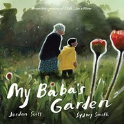
My Baba’s Garden
Jordan Scott (author) · Sydney Smith (illustrator)
2023 · Holiday House, Neal Porter Books
A child remembers daily routines with a grandmother, including her gardening and care for living things. The pictures make affection visible through small repeated actions rather than a single declaration.

Do You Remember?
Sydney Smith (author-illustrator)
2023 · Walker Books
A mother and child recall experiences from an earlier home while adjusting to a new one. Light, texture and shifts between past and present let ordinary memories carry both uncertainty and connection.
An illustrator study: Laura Carlin
Look at how Carlin changes scale and uses empty space to shape a reader’s sense of place.
Laura Carlin bibliography or profile

King of the Sky
Nicola Davies (author) · Laura Carlin (illustrator)
2017 · Candlewick Press
A child newly arrived in an unfamiliar town develops a connection with an older man and his racing pigeon. Carlin’s atmospheric pictures hold uncertainty and hope together without making belonging an instant transformation.
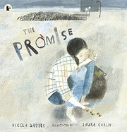
The Promise
Nicola Davies (author) · Laura Carlin (illustrator)
2014 · Walker Books
A young thief’s encounter with a bag of seeds changes the course of her journey. The gradual arrival of colour gives the environmental transformation a visible rhythm; ask who can make and sustain change in shared spaces.

The Iron Man
Ted Hughes (author) · Laura Carlin (illustrator)
1968 · Faber & Faber
A giant metal figure unsettles a community before confronting a threat beyond it. Carlin’s illustrations offer a particular interpretation of Hughes’s story; compare this illustrated edition with other visual versions rather than treating it as an original picturebook.

A World of Your Own
Laura Carlin (author-illustrator)
2014 · Phaidon
Carlin begins with observed objects and moves towards an invented world. The open-ended visual examples encourage readers to make choices about scale, materials and the rules their own imagined place might follow.
An illustrator study: Quentin Blake
Compare the movement of Blake’s line in a wordless story with what it conveys in an illustrated account of grief.
Quentin Blake bibliography or profile

Clown
Quentin Blake (author-illustrator)
1995 · Jonathan Cape
A discarded toy clown travels through the city seeking help for other abandoned toys. With no written narration, gesture, pacing and changing viewpoints carry the encounters and the search for a home.

The Green Ship
Quentin Blake (author-illustrator)
2000 · RED FOX BOOKS (RAND)
Two children discover a ship-shaped garden and join its gardener in imaginary voyages. The hedge becomes both a shared play space and a way of keeping a remembered relationship present.

Mrs Armitage on Wheels
Quentin Blake (author-illustrator)
1999 · Red Fox
Mrs Armitage keeps adding improvements to her bicycle until ingenuity becomes spectacular overloading. The accumulating inventions give readers a visual prediction game about what might happen next.
Michael Rosen’s Sad Book
Michael Rosen (author) · Quentin Blake (illustrator)
2004 · Walker Books
Rosen describes sadness following his son’s death, alongside ordinary moments that continue around it. Blake’s pictures sometimes complicate the words; read with time for silence and without expecting grief to follow a fixed timetable.
An illustrator study: Christian Robinson
Compare how bold shapes, colour and shifts in viewpoint invite readers into ordinary scenes and imagined spaces.
Christian Robinson bibliography or profile

Another
Christian Robinson (author-illustrator)
2019 · Atheneum Books for Young Readers, Atheneum, Books for Young Readers, an imprint of Simon & Schuster Children's Publishing Division
A child enters a sequence of parallel worlds where familiar arrangements return with differences. Wordless repetition makes comparison part of the adventure and invites questions about perspective and possibility.

You Matter
Christian Robinson (author-illustrator)
2020 · Simon & Schuster UK
Changes in viewpoint connect tiny organisms, large creatures and people across time. The pictures complicate the short affirmations by showing dependence, difficulty and the different scales at which a life can matter.

Last Stop on Market Street
Matt de la Peña (author) · Christian Robinson (illustrator)
2015 · G. P. Putnam’s Sons Books for Young Readers
CJ and his grandmother ride a bus across the city, noticing people and places along the way. Their different responses invite discussion of inequality, community and the meanings of service without treating material hardship as merely a change of attitude.

School’s First Day of School
Adam Rex (author) · Christian Robinson (illustrator)
2016 · Roaring Brook Press
A new school building wonders what will happen when children arrive. Giving the building a voice makes first-day uncertainty visible from an unexpected perspective, alongside the children’s own reactions.
An illustrator study: Julie Flett
Look at how season, colour and space establish relationships between people, animals and place.
Julie Flett bibliography or profile

Birdsong
Julie Flett (author-illustrator)
2019 · Greystone Books
A child settling into a new home develops a friendship with an older neighbour through art and the changing seasons. Quiet visual details connect creativity, attention to place and the passage of time.
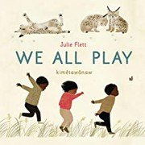
We All Play
Julie Flett (author-illustrator)
2024 · Greystone Books
Children and animals move, rest and play across a series of scenes. Flett’s images connect human activity with the wider living world; attend to the Cree language where included in the edition being shared.

My Heart Fills with Happiness
Monique Gray Smith (author) · Julie Flett (illustrator)
2016 · Orca Book Publishers
Small experiences, from familiar food to music and shared movement, become sources of joy. The brief text leaves space for readers to name their own experiences without assuming everyone finds comfort in the same things.
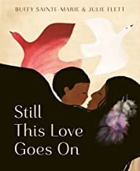
Still This Love Goes On
Buffy Sainte-Marie (author) · Julie Flett (illustrator)
2022 · Greystone Books
Images accompany Buffy Sainte-Marie’s song, connecting affection, home and the passing seasons. Compare how the printed pictures and a listening experience shape the pace and feeling of the words.
An illustrator study: Baek Heena
Compare how photographed sets, handmade figures and lighting give familiar places a sense of wonder.
Baek Heena bibliography or profile
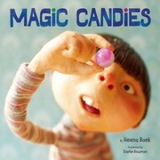
알사탕 (Magic Candies)
Baek Heena (author-illustrator)
2021 · Amazon Crossing Kids
Special sweets allow a lonely child to hear voices and feelings he had not understood before. Baek Heena’s modelled scenes make familiar objects expressive; distinguish this English edition from the Korean original 알사탕.

Moon Pops
Baek Heena (author-illustrator)
2021 · Owlkids Books
During an exceptionally hot night, a melting moon becomes an unexpected source of relief. The modelled apartment building lets readers compare what different residents are doing as the shared problem unfolds.
- Cover pending
Cloud Bread
Baek Heena (author-illustrator)
2021 · Hansol Subuk
Two children bring a piece of cloud home, and their mother makes an extraordinary breakfast. Modelled domestic scenes connect a busy family morning with a light, playful flight of imagination.
- Cover pending
I Am a Dog
Baek Heena (author-illustrator)
2026 · Storybowl
A family dog narrates its own view of household life and its relationship with a child. The change of narrator invites readers to reconsider familiar behaviour from someone else’s position.
Selected covers from publishers. Additional edition covers supplied by Open Library where available.
↑